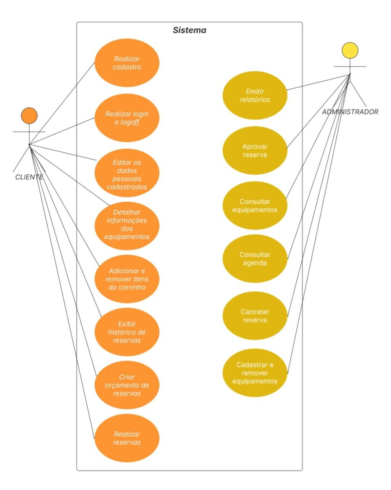
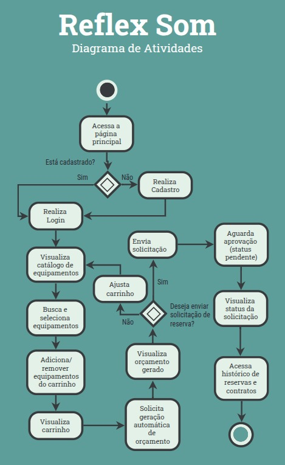

Casos de Usos

Especificação de Caso de Uso: Realizar cadastro de cliente
Persona: Cliente
Estimativa de Esforço: Médio (06-10 horas)
Impedimentos: Nenhum - caso de uso independente
1. Breve Descrição
Este caso de uso permite que novos clientes realizem o cadastro na plataforma da Reflex Som, fornecendo seus dados pessoais e criando uma conta de acesso. Após o cadastro, o cliente poderá acessar funcionalidades como solicitar orçamentos e reservar equipamentos.
2. Fluxo Básico de Eventos com Regras Relacionadas
- O cliente acessa a página inicial da plataforma.
- O cliente clica na opção "Cadastrar-se".
- O sistema exibe o formulário de cadastro.
- O cliente preenche os seguintes campos obrigatórios:
- Nome completo
- CPF ou CNPJ
(↳ ver RN003 – Validação de CPF/CNPJ)
- Telefone
- Senha
- Confirmação de senha
(↳ ver RN001 – Validação de campos obrigatórios)
- O cliente clica no botão "Concluir Cadastro".
- O sistema valida os dados informados.
(↳ ver RN002 – Validação de formato de e-mail e senha)
(↳ ver FA2 – Campos obrigatórios não preenchidos ou inválidos) - O sistema verifica se já existe uma conta com o CPF/CNPJ ou e-mail informado.
(↳ ver FA1 – Conta já cadastrada)
(↳ ver RN004 – Cadastro único por CPF/CNPJ e e-mail) - O sistema salva os dados no banco.
(↳ ver FE1 – Erro interno ao salvar os dados)
- O sistema exibe mensagem de sucesso.
- O caso de uso é encerrado.
3. Fluxos Alternativos
FA1 – Conta já cadastrada com o mesmo CPF/CNPJ ou e-mail (↳ passo 7)
- O fluxo alternativo inicia no passo 7 do fluxo principal.
- O sistema informa que já existe uma conta cadastrada com os dados informados.
(↳ ver RN004 – Cadastro único por CPF/CNPJ e e-mail)
- O sistema exibe a mensagem "Tente novamente com outro e-mail/CPF".
- O fluxo retorna ao passo 3.
FA2 – Campos obrigatórios não preenchidos ou inválidos (↳ passo 6)
- O fluxo alternativo inicia no passo 6.
- O sistema identifica que há campos obrigatórios em branco ou com dados inválidos.
(↳ ver RN001 – Campos obrigatórios)
- O sistema exibe mensagens de erro específicas por campo.
- O cliente corrige os campos.
- O fluxo retorna ao passo 5.
4. Fluxo de Exceção
FE1 – Erro interno ao salvar os dados (↳ passo 8)
- O fluxo de exceção inicia no passo 8.
- O sistema não consegue salvar os dados por erro de conexão ou banco.
- O sistema exibe uma mensagem de erro geral.
- O cliente pode tentar novamente ou contatar o suporte.
- O fluxo é encerrado.
5. Pré-Condições
- O cliente ainda não possui cadastro na plataforma.
- O cliente tem acesso à internet e ao site da Reflex Som.
6. Pós-Condições
- Uma nova conta é criada e salva no banco de dados.
- O cliente pode efetuar login com as credenciais recém-criadas.
7. Regras de Negócio
RN001 – Todos os campos marcados como obrigatórios devem ser preenchidos.
RN002 – O e-mail deve ser válido e a senha deve conter no mínimo 8 caracteres, incluindo letra maiúscula, número e caractere especial.
RN003 – CPF ou CNPJ devem ser válidos conforme algoritmos de verificação.
RN004 – Não deve ser permitido cadastro duplicado para o mesmo e-mail ou CPF/CNPJ.
Especificação de Caso de Uso: Realizar login do Cliente
Persona: Cliente
Estimativa de Esforço: Fácil (04-06 horas)
Impedimentos: Depende do caso de uso "Realizar cadastro de cliente"
1. Breve Descrição
Este caso de uso permite que um cliente com cadastro ativo na Reflex Som acesse a plataforma utilizando suas credenciais (e-mail e senha). Após o login bem-sucedido, o cliente será redirecionado para sua área pessoal, onde poderá visualizar o catálogo, solicitar orçamentos e gerenciar reservas.
2. Fluxo Básico de Eventos
- O cliente acessa a página inicial da plataforma.
- O cliente clica na opção "Entrar".
- O sistema exibe o formulário de login com os campos:
- Senha
- O cliente preenche os campos e clica em "Acessar".
Ver RN001 – Campos obrigatórios
- O sistema valida os campos preenchidos.
Ver RN002 – Validação de formato de e-mail
- O sistema verifica se as credenciais são válidas.
Ver FA1 – Credenciais inválidas
Ver RN003 – Verificação de autenticação - O sistema autentica o cliente e inicia uma sessão.
- O sistema redireciona o cliente para a área logada.
- O caso de uso é encerrado.
3. Fluxos Alternativos
FA1 – Credenciais inválidas (↳ passo 6)
- O fluxo alternativo inicia no passo 6.
- O sistema informa que o e-mail ou a senha estão incorretos.
- O sistema exibe novamente o formulário de login.
- O cliente pode tentar novamente.
- O fluxo retorna ao passo 3.
FA2 – Campos obrigatórios não preenchidos (↳ passo 5)
- O fluxo alternativo inicia no passo 5.
- O sistema identifica que um ou mais campos estão em branco.
- O sistema exibe uma mensagem de erro indicando os campos obrigatórios.
- O cliente corrige os campos.
- O fluxo retorna ao passo 4.
Ver RN001
4. Fluxos de Exceção
FE1 – Erro interno ao autenticar (↳ passo 6 ou 7)
- O sistema tenta autenticar o cliente, mas ocorre uma falha técnica (ex: indisponibilidade do banco de dados).
- O sistema exibe uma mensagem genérica de erro: "Erro ao tentar acessar. Tente novamente mais tarde."
- O cliente é mantido na tela de login.
- O fluxo é encerrado.
5. Pré-Condições
- O cliente já deve estar cadastrado na plataforma.
- O cliente está na página pública da Reflex Som.
6. Pós-Condições
- Uma sessão autenticada é iniciada.
- O cliente tem acesso aos recursos da área logada.
7. Regras de Negócio
RN001 – Campos obrigatórios
- Referente ao passo 4 e FA2
- Os campos e-mail e senha são obrigatórios para login.
RN002 – Validação de e-mail
- Referente ao passo 5
- O e-mail deve seguir o formato válido: exemplo@dominio.com.
RN003 – Verificação de autenticação
- Referente ao passo 6
- As credenciais devem ser verificadas contra os dados armazenados no banco. Senhas devem ser comparadas de forma criptografada (hash seguro, ex: bcrypt).
Especificação de Caso de Uso: Realizar logoff
Persona: Cliente
Estimativa de Esforço: Fácil (04-06 horas)
Impedimentos: Depende do caso de uso "Realizar login do Cliente"
1. Breve Descrição
Este caso de uso permite que um cliente autenticado encerre sua sessão ativa na plataforma, retornando à página inicial. O logoff garante que o acesso às funcionalidades protegidas seja bloqueado até novo login.
2. Fluxo Básico de Eventos
- O cliente encontra-se logado na plataforma.
- O cliente clica no ícone do perfil localizado no topo da tela.
- O sistema exibe um menu suspenso com a opção “Sair”.
- O cliente clica na opção "Sair".
- O sistema encerra a sessão autenticada.
Ver RN001 – Encerramento de sessão
Ver FE1 – Erro ao encerrar sessão - O sistema redireciona o cliente para a página inicial da plataforma.
- O caso de uso é encerrado.
4. Fluxos de Exceção
FE1 – Erro ao encerrar sessão (↳ passo 5)
4.1.1 O fluxo de exceção inicia no passo 5 do fluxo principal.
4.1.2 O sistema encontra uma falha ao encerrar a sessão (ex: token inválido ou falha de comunicação).
4.1.3 O sistema exibe uma mensagem de erro genérica: "Não foi possível encerrar a sessão. Tente novamente."
4.1.4 O cliente permanece na mesma página.
4.1.5 O fluxo é encerrado.
5. Pré-Condições
- O cliente deve estar autenticado na plataforma.
- O sistema deve estar operacional.
6. Pós-Condições
- A sessão autenticada é encerrada.
- O cliente é tratado como visitante e não pode acessar funcionalidades restritas.
7. Regras de Negócio
RN001 – Encerramento de sessão
- Referente ao passo 5 do fluxo básico
- Referente também ao FE1
- O sistema deve eliminar o token de autenticação da sessão (ex: JWT ou sessão em cache) e garantir que o cliente seja tratado como visitante.
Especificação de Caso de Uso: Editar dados pessoais cadastrados do Cliente
Persona: Cliente
Estimativa de Esforço: Fácil (06-08 horas)
Impedimentos: Depende dos casos de uso "Realizar cadastro de cliente" e "Realizar login do Cliente"
1. Breve Descrição
Este caso de uso permite que o cliente edite suas informações pessoais na plataforma Reflex Som. Os dados editáveis incluem: nome completo, telefone, data de nascimento e endereço (rua, cidade, estado e CEP). Os campos e-mail e CPF/CNPJ são exibidos apenas para visualização, não sendo editáveis.
2. Fluxo Básico de Eventos
- O cliente encontra-se autenticado na plataforma.
- O cliente acessa a área "Perfil".
- O sistema exibe os dados pessoais previamente cadastrados.
-
O cliente altera um ou mais dos seguintes campos:
- Nome completo
- Telefone
- Data de nascimento
- Endereço (rua, cidade, estado e CEP)
-
O cliente clica no botão "Salvar Alterações".
- O sistema valida os dados preenchidos.
Ver RN001 – Validação de campos obrigatórios
Ver RN002 – Formato de telefone e data
Ver RN003 – Validação de endereço
Ver FA1 – Campos inválidos ou incompletos - O sistema atualiza os dados no banco.
Ver FE1 – Erro interno ao salvar alterações
- O sistema exibe mensagem de confirmação: "Dados atualizados com sucesso".
- O caso de uso é encerrado.
3. Fluxos Alternativos
FA1 – Campos inválidos ou incompletos (↳ passo 6)
3.1.1 O fluxo alternativo inicia no passo 6 do fluxo principal.
3.1.2 O sistema identifica que um ou mais campos estão com formato incorreto ou em branco.
3.1.3 O sistema exibe mensagens de erro específicas por campo.
3.1.4 O cliente corrige os campos.
3.1.5 O fluxo retorna ao passo 5.
Ver RN001, RN002 e RN003
4. Fluxos de Exceção
FE1 – Erro interno ao salvar alterações (↳ passo 7)
4.1.1 O fluxo de exceção inicia no passo 7 do fluxo principal.
4.1.2 O sistema encontra uma falha técnica durante a atualização (ex: falha de conexão com o banco).
4.1.3 O sistema exibe uma mensagem genérica: "Não foi possível salvar as alterações. Tente novamente."
4.1.4 O cliente permanece na página.
4.1.5 O fluxo é encerrado.
5. Pré-Condições
- O cliente deve estar autenticado na plataforma.
- Os dados exibidos devem estar previamente cadastrados no sistema.
6. Pós-Condições
- Os dados atualizados são persistidos no banco de dados.
- As próximas visualizações exibirão as informações modificadas.
7. Regras de Negócio
RN001 – Campos obrigatórios
- Referente ao passo 4 e FA1
- Nome, telefone e endereço completo (rua, cidade, estado, CEP) são obrigatórios.
RN002 – Formato de telefone e data de nascimento
- Referente ao passo 4 e FA1
- O telefone deve seguir o formato (00) 00000-0000. A data deve ser válida no padrão dd/mm/aaaa.
RN003 – Validação de endereço
- Referente ao passo 4 e FA1
- O CEP deve conter 8 dígitos e o estado (UF) deve ser uma sigla de 2 letras válida.
8. Informações Adicionais
- Os campos e-mail e CPF/CNPJ são apenas exibidos como leitura e não podem ser editados.
Especificação de Caso de Uso: Cadastrar equipamento na lista de equipamentos
Persona: Administrador
Estimativa de Esforço: Difícil (10-15 horas)
Impedimentos: Depende do caso de uso "Realizar login do Cliente" (para autenticação do administrador)
1. Breve Descrição
Este caso de uso permite que o administrador da plataforma registre um novo equipamento no catálogo da Reflex Som. O formulário inclui informações básicas como nome, marca, categoria e valores de locação, além de detalhes como especificações técnicas, imagens e quantidade disponível. Após o preenchimento e validação dos dados, o equipamento torna-se visível para os clientes na seção de catálogo.
2. Fluxo Básico de Eventos
- O administrador está autenticado na plataforma na seção "Equipamentos".
- O administrador acessa e clica no botão "Cadastrar Equipamento".
- O sistema exibe os campos da seção Informações Básicas:
- Nome do equipamento *
- Marca *
- Modelo *
- Categoria *
- Descrição *
- Número de série
- O administrador preenche os campos de Informações Básicas.
- O sistema exibe os campos da seção Valores de Locação:
- Valor diário (R$)*
- Valor semanal (R$)
- Valor mensal (R$)
- O administrador preenche os valores de locação.
Ver RN002 – Regras de precificação mínima
- O sistema exibe os campos da seção Quantidade e Estado:
- Quantidade total *
- Quantidade disponível *
- Estado (ex: Disponível, Em manutenção)
- O administrador preenche os dados de quantidade e estado.
Ver RN003 – Validação de estoque
- O sistema exibe a seção Especificações Técnicas, permitindo adicionar pares chave/valor.
- O administrador preenche uma ou mais especificações técnicas (ex: Potência: 1000W).
- O sistema exibe os campos da seção Imagens:
- Imagem principal
- Imagens adicionais
- O administrador preenche as URLs das imagens.
> Ver RN004 – Validação de imagem - O sistema exibe o campo de Observações (opcional).
- O administrador insere observações, se desejar.
- O administrador clica no botão "Cadastrar Equipamento".
- O sistema valida todos os campos obrigatórios, formatos e coerência geral do formulário.
> Ver RN001 – Validação de campos obrigatórios e formato
> Ver FA1 - Dados obrigatórios ausentes ou inválidos - O sistema registra o equipamento no banco de dados.
> Ver FE1 – Erro interno ao salvar os dados - O sistema exibe a mensagem: "Equipamento cadastrado com sucesso."
- O caso de uso é encerrado.
3. Fluxos Alternativos
FA1 – Dados obrigatórios ausentes ou inválidos (↳ passo 16)
3.1.1 O fluxo alternativo inicia no passo 16.
3.1.2 O sistema detecta campos obrigatórios não preenchidos ou com erro de formato.
3.1.3 O sistema exibe mensagens específicas de validação junto a cada campo.
3.1.4 O administrador corrige os dados.
3.1.5 O fluxo retorna ao passo 15.
Ver RN001, RN002 e RN003
4. Fluxos de Exceção
FE1 – Erro interno ao salvar os dados (↳ passo 17)
4.1.1 O fluxo de exceção inicia no passo 17.
4.1.2 O sistema falha ao persistir o equipamento no banco de dados (ex: erro de conexão).
4.1.3 O sistema exibe a mensagem: "Erro ao cadastrar o equipamento. Tente novamente mais tarde."
4.1.4 O administrador pode tentar novamente.
4.1.5 O fluxo é encerrado.
5. Pré-Condições
- O administrador está autenticado.
6. Pós-Condições
- O novo equipamento está disponível no catálogo para visualização dos clientes.
7. Regras de Negócio
RN001 – Validação de campos obrigatórios e formato
- Referente ao passo 16 do fluxo básico e FA1
- Os campos obrigatórios (*) devem estar preenchidos. Nome, marca e descrição devem ter no mínimo 3 caracteres. Categorias e modelo devem ser selecionados.
RN002 – Regras de precificação mínima
- Referente ao passo 6 do fluxo básico e FA1
- O valor diário deve ser maior que R$ 0,00. Valores negativos são inválidos.
RN003 – Validação de estoque
- Referente ao passo 8 do fluxo básico e FA1
- A quantidade disponível não pode ser maior que a quantidade total. Ambos devem ser maiores que zero.
RN004 – Validação de imagem
- Referente ao passo 12
- A imagem principal deve ter formato válido (.jpg, .png, .webp). O link deve ser acessível e a imagem deve ter até 5MB.
Especificação de Caso de Uso: Realizar consultas de equipamentos
Persona: Cliente
Estimativa de Esforço: Média (08-10 horas)
Impedimentos: Nenhum - caso de uso independente
1. Breve Descrição
Este caso de uso permite que o cliente realize buscas no catálogo de equipamentos da Reflex Som. A interface oferece filtros por nome, marca, categoria, disponibilidade e faixa de preço. O sistema exibe os resultados em cards com informações resumidas de cada equipamento.
2. Fluxo Básico de Eventos
- O cliente acessa a plataforma e está autenticado.
- O cliente clica na aba “Equipamentos”.
- O sistema exibe a lista de todos os equipamentos disponíveis, organizados em cards.
-
O cliente visualiza os seguintes dados em cada card:
-
Nome do equipamento
-
Categoria
-
Marca
-
Preço por dia
-
Quantidade disponível
-
Status de disponibilidade (ex: “Disponível”)
→ Ver RN001 – Atualização de status em tempo real
-
-
O cliente pode utilizar os filtros de busca, incluindo:
-
Nome, marca ou modelo
-
Categoria
-
Faixa de preço
-
Status de disponibilidade
→ Ver RN002 – Aplicação de filtros múltiplos
-
-
O cliente clica em “Buscar”.
- O sistema atualiza os resultados de acordo com os filtros selecionados.
→ Ver FA1 – Nenhum resultado encontrado
- O caso de uso é encerrado.
3. Fluxos Alternativos
FA1 – Nenhum resultado encontrado (↳ passo 7)
3.1.1 O fluxo alternativo inicia no passo 7.
3.1.2 O sistema identifica que não há equipamentos que correspondam aos filtros aplicados.
3.1.3 O sistema exibe a mensagem: “Nenhum equipamento encontrado. Tente ajustar os filtros ou fazer uma nova busca.”
3.1.4 O cliente limpa os filtros e tenta novamente.
3.1.5 O fluxo retorna ao passo 5.
→ Ver RN002 – Aplicação de filtros
4. Fluxos de Exceção
FE1 – Erro ao carregar o catálogo (↳ passo 3 ou 7)
4.1.1 O fluxo de exceção inicia no passo 3 ou 7.
4.1.2 O sistema encontra falha ao acessar os dados de equipamentos no banco.
4.1.3 O sistema exibe uma mensagem: “Erro ao carregar os equipamentos. Tente novamente mais tarde.”
4.1.4 O cliente pode tentar recarregar a página.
4.1.5 O fluxo é encerrado.
5. Pré-Condições
- O cliente está autenticado na plataforma.
- Existem equipamentos cadastrados no sistema.
6. Pós-Condições
- O cliente visualizou o catálogo completo ou filtrado.
- O cliente pode selecionar um item para ver os detalhes.
7. Regras de Negócio
RN001 – Atualização de status em tempo real
- Referente ao passo 4
- O sistema deve mostrar o status atual de disponibilidade com base no banco de dados.
RN002 – Aplicação de filtros múltiplos
- Referente ao passo 5 e FA1
- O sistema deve permitir múltiplos filtros combinados (textuais e numéricos).
8. Informações Adicionais
- A listagem pode ser exibida em grid ou lista.
- Deve haver paginação se o número de resultados for alto.
- Os filtros devem ser mantidos mesmo após navegação entre páginas.
Especificação de Caso de Uso: Detalhar informações do equipamento
Persona: Cliente
Estimativa de Esforço: Média (08-10 sprints)
Impedimentos: Nenhum - caso de uso independente
1. Breve Descrição
Este caso de uso permite que o cliente visualize todos os detalhes técnicos e descritivos de um equipamento específico, a partir da listagem de resultados da consulta. A tela detalha informações como preço, descrição, quantidade disponível e imagens.
2. Fluxo Básico de Eventos
- O cliente acessa a página Equipamentos.
- O cliente clica em “Ver Detalhes” em um dos cards exibidos.
-
O sistema exibe a página de detalhes do equipamento com as seguintes informações:
- Nome e marca
- Categoria
- Preço por diária, semanal e mensal
- Quantidade disponível
- Descrição completa
- Imagens (se houver)
- Informações técnicas
→ Ver RN003 – Informações obrigatórias no detalhamento
- O cliente analisa os dados exibidos.
- O caso de uso é encerrado.
3. Fluxos Alternativos
Nenhum fluxo alternativo aplicável.
4. Fluxos de Exceção
FE1 – Erro ao carregar dados do equipamento (↳ passo 3)
4.1.1 O fluxo de exceção inicia no passo 3.
4.1.2 O sistema encontra falha ao recuperar os dados do equipamento.
4.1.3 O sistema exibe a mensagem: “Erro ao carregar informações do equipamento. Tente novamente mais tarde.”
4.1.4 O cliente pode voltar à lista de resultados.
4.1.5 O fluxo é encerrado.
5. Pré-Condições
- O cliente acessou a listagem de equipamentos.
- O equipamento ainda está cadastrado e disponível.
6. Pós-Condições
- O cliente visualizou os dados técnicos e comerciais completos do item.
7. Regras de Negócio
RN003 – Informações obrigatórias no detalhamento
- Referente ao passo 3
- A página deve exibir nome, marca, categoria, valores de locação, descrição, imagens e especificações técnicas.
8. Informações Adicionais
- A exibição de detalhes pode ser usada como base para iniciar a adição ao carrinho (cliente) ou remoção (administrador).
- A tela pode ser expandida no futuro para incluir avaliações ou vídeos demonstrativos.
Especificação de Caso de Uso: Adicionar equipamentos ao carrinho
Persona: Cliente
Estimativa de Esforço: Média (08-10 horas)
Impedimentos: Nenhum - caso de uso independente
1. Breve Descrição
Este caso de uso permite que o cliente selecione equipamentos desejados para compor seu orçamento, preenchendo os dados necessários de uso, como quantidade, período e data. Os itens são adicionados ao carrinho e ficam prontos para que o cliente possa gerar um orçamento detalhado posteriormente.
2. Fluxo Básico de Eventos
- O cliente está autenticado na plataforma.
- O cliente acessa o catálogo de equipamentos.
- O cliente clica em “Ver Detalhes” de um equipamento.
- O cliente clica em “Adicionar ao carrinho”.
-
O sistema solicita ao cliente os seguintes dados:
-
Quantidade de unidades desejadas
-
Modalidade de preço (diária, semanal, mensal)
-
Número correspondente de dias, semanas ou meses
-
Data prevista de uso
→ Ver RN001 – Validação dos dados inseridos
-
-
O cliente confirma os dados.
→ Ver RN002 – Verificação de disponibilidade
→ Ver FA1 – Equipamento com disponibilidade parcial
-
O sistema adiciona o equipamento ao carrinho.
- O cliente pode repetir os passos 3 a 6 para adicionar mais itens.
- O caso de uso é encerrado.
3. Fluxos Alternativos
FA1 – Equipamento com disponibilidade parcial (↳ passo 6)
3.1.1 O fluxo inicia no passo 6.
3.1.2 O sistema identifica que a quantidade solicitada não está disponível integralmente.
3.1.3 O sistema informa a quantidade máxima disponível ou sugere outra data.
3.1.4 O cliente ajusta os dados ou cancela o item.
3.1.5 O fluxo retorna ao passo 5.
→ Ver RN002 – Verificação de disponibilidade
4. Fluxos de Exceção
Nenhum fluxo de exceção aplicável diretamente a este caso de uso (validações são tratadas no fluxo alternativo).
5. Pré-Condições
- O cliente está autenticado.
- Existem equipamentos disponíveis no sistema.
→ Relacionado ao passo 1 e 2
6. Pós-Condições
- Um ou mais equipamentos são adicionados ao carrinho do cliente.
- Os dados informados ficam prontos para geração de orçamento.
7. Regras de Negócio
RN001 – Validação dos dados inseridos
- Referente ao passo 5
- Os campos quantidade, modalidade, período e data são obrigatórios. O período deve ser um número inteiro positivo e a data deve ser futura.
RN002 – Verificação de disponibilidade
- Referente ao passo 6 e FA1
- O sistema deve consultar a disponibilidade dos equipamentos e bloquear quantidades não disponíveis.
8. Informações Adicionais
- O botão “Adicionar ao carrinho” só será habilitado após preenchimento válido.
- Equipamentos repetidos podem atualizar o item existente no carrinho.
Especificação de Caso de Uso: Criar orçamento de uma reserva
Persona: Cliente
Estimativa de Esforço: Difícil (12-15 horas)
Impedimentos: Depende dos casos de uso "Realizar login do Cliente", "Editar dados pessoais cadastrados do Cliente" e "Cadastrar equipamento na lista de equipamentos"
1. Breve Descrição
Este caso de uso permite que o cliente gere automaticamente um orçamento estimado com base nos itens que foram previamente adicionados ao carrinho. O sistema calcula o valor de cada item e apresenta o valor total do orçamento.
2. Fluxo Básico de Eventos
- O cliente está autenticado.
- O cliente acessa a página do carrinho.
→ Ver FA1 – Carrinho vazio ao acessar
-
O sistema exibe para cada item:
-
Nome do equipamento
-
Quantidade, modalidade, período e data
-
Valor unitário da modalidade
-
Total estimado do item (quantidade × valor × período)
→ Ver RN003 – Cálculo do valor individual do item
→ Ver FE1 – Erro no cálculo do orçamento
-
-
O sistema soma todos os valores estimados dos itens.
→ Ver RN004 – Soma final do orçamento
-
O cliente revisa o orçamento exibido.
-
O caso de uso é encerrado.
3. Fluxos Alternativos
FA1 – Carrinho vazio ao acessar (↳ passo 2)
3.1.1 O fluxo inicia no passo 2.
3.1.2 O sistema detecta que nenhum item foi adicionado ao carrinho.
3.1.3 O sistema exibe a mensagem: “Seu carrinho está vazio. Adicione alguns equipamentos ao seu carrinho para começar.”
3.1.4 O cliente pode retornar ao catálogo.
3.1.5 O fluxo retorna ao passo 1.
4. Fluxos de Exceção
FE1 – Erro no cálculo do orçamento (↳ passo 3)
4.1.1 O fluxo inicia no passo 3.
4.1.2 O sistema encontra falha técnica no cálculo dos valores.
4.1.3 O sistema exibe a mensagem: “Não foi possível calcular o orçamento. Tente novamente.”
4.1.4 O cliente permanece na página do carrinho.
4.1.5 O fluxo é encerrado.
5. Pré-Condições
- O cliente está autenticado.
- O carrinho do cliente possui pelo menos um equipamento com dados válidos.
6. Pós-Condições
- Um orçamento estimado é exibido ao cliente.
- O orçamento poderá ser enviado para reserva em outro caso de uso.
7. Regras de Negócio
RN003 – Cálculo do valor individual do item
- Referente ao passo 3
- O sistema calcula o valor estimado de cada item como:
total_item = valor_modalidade × período × quantidade
RN004 – Soma final do orçamento
- Referente ao passo 4
- O sistema soma todos os valores estimados dos itens do carrinho para exibir o total final.
Especificação de Caso de Uso: Realizar Reservas
Persona: Cliente
Estimativa de Esforço: Difícil (12-15 horas)
Impedimentos: Depende dos casos de uso "Realizar login do Cliente", "Editar dados pessoais cadastrados do Cliente" e "Cadastrar equipamento na lista de equipamentos"
1. Breve Descrição
Este caso de uso permite que o cliente, após montar seu orçamento personalizado, envie uma solicitação de reserva dos equipamentos selecionados. O sistema valida a disponibilidade final dos itens, registra a solicitação e notifica a equipe da Reflex Som para análise e aprovação manual posterior.
2. Fluxo Básico de Eventos
- O cliente está autenticado na plataforma.
- O cliente acessa o carrinho de orçamento.
- O cliente revisa os equipamentos selecionados, os períodos e o valor estimado.
- O cliente clica no botão "Solicitar reserva".
- O sistema solicita a confirmação de dados:
- Data de uso de cada equipamento
- Quantidade de cada equipamento
- Observações adicionais (opcional)
Ver RN001 – Validação dos campos obrigatórios
- O cliente confirma a solicitação.
- O sistema realiza nova verificação da disponibilidade de todos os itens.
Ver RN002 – Verificação final de disponibilidade Ver FA1 – Equipamento indisponível no momento da solicitação
- O sistema registra a solicitação de reserva no banco.
Ver FE1 – Erro interno ao registrar a solicitação
- O sistema exibe a mensagem: "Reserva enviada com sucesso! Aguarde aprovação."
- O sistema notifica a equipe da Reflex Som.
- O caso de uso é encerrado.
3. Fluxos Alternativos
FA1 – Equipamento indisponível no momento da solicitação (↳ passo 7)
3.1.1 O fluxo alternativo inicia no passo 7.
3.1.2 O sistema identifica que algum dos equipamentos não está mais disponível.
3.1.3 O sistema destaca os itens afetados.
3.1.4 O cliente pode ajustar os dados ou remover o item.
3.1.5 O fluxo retorna ao passo 3.
Ver RN002 – Verificação final de disponibilidade
4. Fluxos de Exceção
FE1 – Erro interno ao registrar a solicitação (↳ passo 8)
4.1.1 O fluxo de exceção inicia no passo 8.
4.1.2 O sistema encontra falha ao salvar a solicitação (ex: erro de banco).
4.1.3 O sistema exibe a mensagem: "Erro ao registrar a reserva. Tente novamente."
4.1.4 O cliente permanece na tela atual.
4.1.5 O fluxo é encerrado.
5. Pré-Condições
- O cliente já realizou um orçamento personalizado.
- O cliente está autenticado.
- Há equipamentos no carrinho com dados válidos.
6. Pós-Condições
- A solicitação de reserva é registrada com status "Pendente de aprovação".
- A equipe da Reflex Som será notificada.
7. Regras de Negócio
RN001 – Validação dos campos obrigatórios
- Referente ao passo 5
- O sistema deve exigir o preenchimento da data de uso dos equipamentos. Os campos devem ser válidos e coerentes com os itens do carrinho.
RN002 – Verificação final de disponibilidade
- Referente ao passo 7 e FA1
- Antes de registrar a reserva, o sistema deve verificar se todos os itens permanecem disponíveis para o período selecionado.
Diagrama de Atividades
